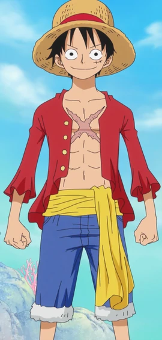
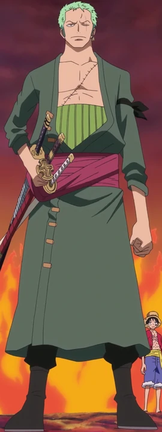
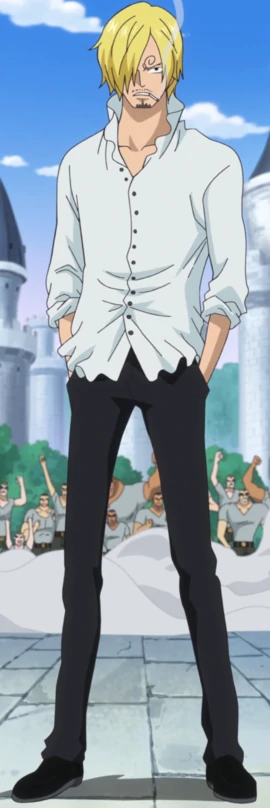
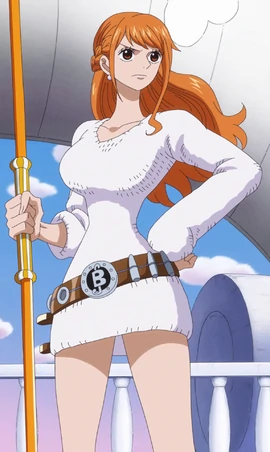

|

|
Monkey D. Luffy |
Monkey D. Luffy,also known as "Straw Hat Luffy" and commonly as
"Straw Hat", is the main protagonist of the manga and anime, One
Piece. He is the founder and captain of the increasingly
infamous and powerful Straw Hat Pirates, as well as one of its
top three fighters. His lifelong dream is to become the Pirate
King.
|
$1,500,000,000 Beli |
|

|
Roronoa Zoro |
Roronoa Zoro,[1] also known as "Pirate Hunter" Zoro,[8] is a
swordsman and combatant of the Straw Hat Pirates. Formerly a
bounty hunter,[5] he is the second member of the crew and the
first to join, doing so in the Romance Dawn Arc.
|
$ 320,000,000 Beli |
|

|
Sanji |
"Black Leg" Sanji,[6] born as Vinsmoke Sanji,[22][23][24] is the
cook of the Straw Hat Pirates. He is the fifth member of the
crew and the fourth to join, doing so at the end of the Baratie
Arc.
|
$ 330,000,000 Beli |
|

|
Nami |
"Cat Burglar" Nami is the navigator of the Straw Hat Pirates.
She is the third member of the crew and the second to join,
doing so during the Orange Town Arc.[19] She is the adoptive
sister of Nojiko after the two were orphaned and taken in by
Bell-mère.
|
$ 66,000,000 Beli |